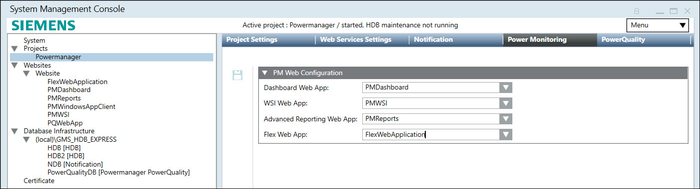

Linking Web Service Application, Flex Web Application, Power Quality Web Application, and Power Quality Database to the Project
You have created a Web Service, Flex Client, and Power Quality web applications.
You have created a Power Quality database.
Linking Web Service Application and Flex Web Application to the Project
- Open SMC and navigate to your project.
- Open Power Monitoring tab.
- Select Web Service Application from WSI Web App drop-down.
- Select Flex Client Application from Flex Web App drop-down.
- Click Save
 .
.
- Web Service application and flex web app are linked to project.

Linking Power Quality Web Application and Power Quality Database to the project
- Open SMC and select created project.
- Navigate to PowerQuality tab and PowerQuality Details expander.
- Select Linked PowerQuality Web App and Linked PowerQuality DB.
For Remote PQDB, the Encrypted check box is selected by default when you save and reload the PowerQuality tab. - Click Save .
- Power Quality analytics web application and Power Quality database linked to the project.